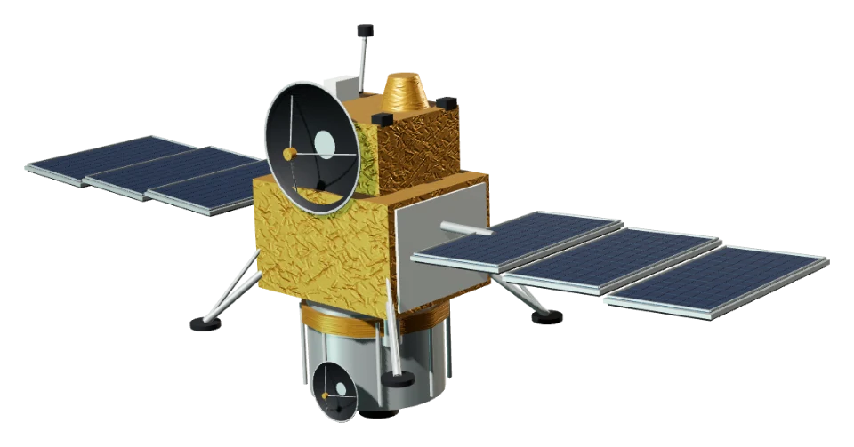
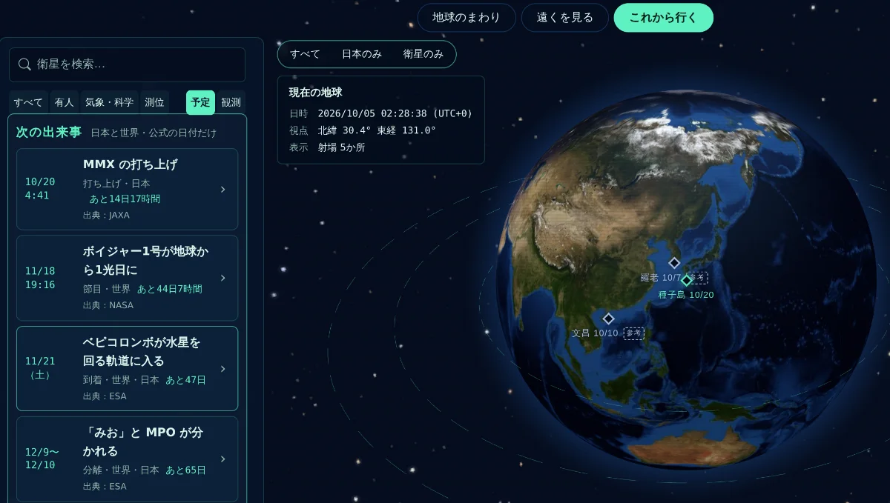

PREVIEW · MARTIAN MOONS EXPLORATION
MMX を追う
こんな感じで見せる予定です（準備中）
火星の衛星フォボスを観測し、表面の砂や岩石を地球に持ち帰る、JAXA の火星衛星探査機 MMX。
打ち上げから火星のまわりまで、「いま、地球と火星のあいだのどこにいるか」を見られるようにしていきます。

01見せ方の予定：4つの場面
運用の「いまの状態」は、JAXA の公式の発信がいちばんの情報源です。VOYASCOPE は、位置と距離の感覚を補う入口として、公式のページや中継へご案内します。
-
SCENE 1
打ち上げまで
いまも見られます
アプリの「次の出来事」に、打ち上げまでの残り時間。地球の上に、種子島のピン。

2026年10月5日の画面（PC） -
SCENE 2
打ち上げの日
予定
打ち上げの時刻を、地球の画面で追います。計画では、打ち上げの約1時間11分後に、火星へ向かう軌道（火星遷移軌道）で MMX がロケットから分かれます。それまでの間は、地球の画面に MMX の印（ビーコン）を出します（位置は描かず、計画の時刻だけ）。打ち上がったかどうかは、JAXA の発表を確かめてから記録します。
- 0:00:00打ち上げ（10/20 4:41:03 の予定）
- 0:05:12第2段エンジンの1回目の燃焼（〜0:10:40）
- 0:10:40慣性飛行
- 1:03:57第2段エンジンの2回目の燃焼（〜1:10:21）
- 1:11:12MMX を分離（火星遷移軌道へ）→ 遠くを見る部屋へ
時刻は打ち上げからの経過時間で、どれも「約」です。出典：JAXA 打上げ計画書（10月20日に打ち上げた場合）。打ち上げの日がずれると、1回目の燃焼のあとの計画が変わります。
YouTube LIVE（JAXA Channel）とニコニコ生放送で、打ち上げ55分前ごろから75分後ごろまで（JAXA の特設サイト）。VOYASCOPE からはリンクでご案内します。
-
SCENE 3
火星への旅（約1年）
予定・いちばんの見どころ
実線と点＝あなたのブラウザで計算した位置（Astronomy Engine）。 点線＝道のりのイメージ（実際の軌道は、打ち上げのあとに公開されるデータで描きます） MMX 火星衛星探査機
- 打ち上げから
- — 日目
- 地球から
- — km
- 火星まで
- — km
- 電波で片道
- — 分
表示のイメージです。数字は、打ち上げのあとに公開されるデータ（NASA JPL の Horizons など）を確かめてから出します。それまでは MMX の位置を描きません（2026年10月6日の時点で、Horizons にはまだ MMX は載っていません）。
きょうの地球と火星（計算）
—
—
電波も光と同じ速さで進むので、火星まで届くのにこれだけかかります（このページを開いた時刻の距離で計算）。
-
SCENE 4
火星のまわりで（約3年）
予定
イメージ（大きさ・距離は実際の比率ではありません） フォボスの観測、ローバの先行着陸、フォボスでのサンプル採取、ダイモスのフライバイ観測と、火星圏に3年いる予定です。新しい場面を作って、そのとき MMX がどこで何をしているかを見せます。
02旅のしおり（公式の予定）
STEP 012026年度
種子島宇宙センターから H3 ロケットで打ち上げ（10月20日の予定）。
STEP 022027年度
約1年かけて火星圏へ。衛星フォボスをめざす。
STEP 03火星圏で3年
フォボスの観測、ローバの先行着陸。フォボスでのサンプル採取がミッションのクライマックス。もう一つの火星衛星・ダイモスをフライバイ観測。
STEP 042030年度
火星圏を離れ、1年かけて地球圏へ帰還。
STEP 052031年度
カプセルを分離し、大気圏へ突入。カプセルはオーストラリアで回収する予定。
出典：年度は MMX プレスキット（JAXA、2026年9月18日）の「火星圏到着：2027年度」「火星圏離脱：2030年度」「地球帰還：2031年度」。中身は MMX プロジェクトサイトの「ミッションスケジュール」とプレスキット（2026年10月6日に確認）。言い回しは少し短くしています
03いまの状態は、公式で
- MMX プロジェクトサイトmmx.jaxa.jp ↗
- MMX×H3ロケット10号機 特設サイトfanfun.jaxa.jp ↗
- 打ち上げの中継（YouTube LIVE・ニコニコ生放送）fanfun.jaxa.jp ↗
- 地上局の運用状況（美笹深宇宙探査用地上局）isas.jaxa.jp ↗
- MMX の公式 X（@mmx_jaxa_jp）x.com ↗
- JAXA プレスリリース：MMX の打上げjaxa.jp ↗
- 打上げ計画書（PDF）jaxa.jp ↗
- MMX の運用の「いまの状態」（はやぶさ2 の「はや2NOW」のようなページ）出たら、いちばん上に
04VOYASCOPE について
地球のまわりの人工衛星や ISS、遠くの探査機の「いま」を、観測端末のような画面で覗く Web アプリです。中高生向けに作っています。事実には出典を付け、公式のページへご案内します。無料で、登録も広告もありません。